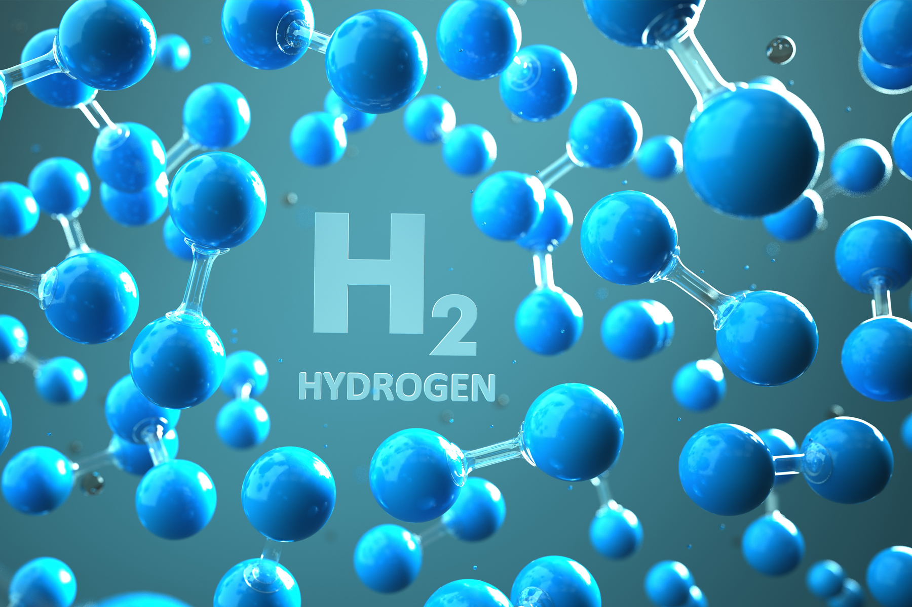

El hidrógeno es el primer elemento de la tabla periódica. Es el elemento químico más ligero que existe, su átomo está formado por un protón y un electrón y es estable en forma de molécula diatómica (H2). En condiciones normales se encuentra en estado gaseoso, y es insípido, incoloro e inodoro. En la Tierra es muy abundante, constituye aproximadamente el 75 % de la materia del Universo, pero se encuentra combinado con otros elementos como el oxígeno formando moléculas de agua, o al carbono, formando compuestos orgánicos. Por tanto, no es un combustible que pueda tomarse directamente de la naturaleza, sino que es un vector energético (como la electricidad) y por ello se tiene que “fabricar."